Chaque chapitre, une figure en 3D qu’on fait tourner, qu’on arrête et qu’on décompose
Sur chaque carte, l’année où la notion est enseignée en Chine : 初二 = 4e, 初三 = 3e, 高一 = seconde, 高二 = première, 大学 = université.
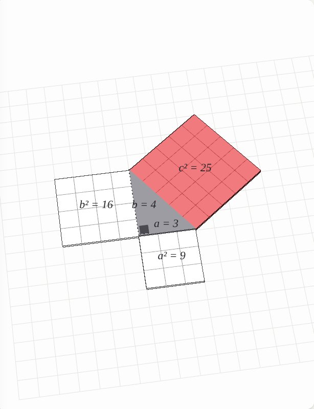
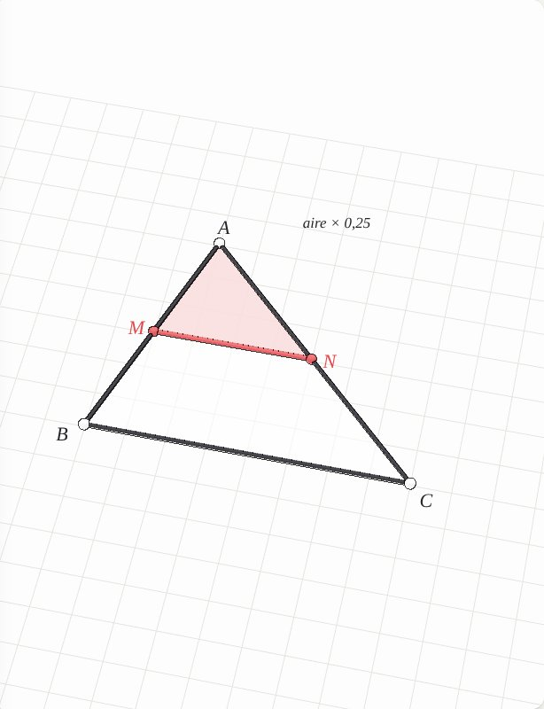
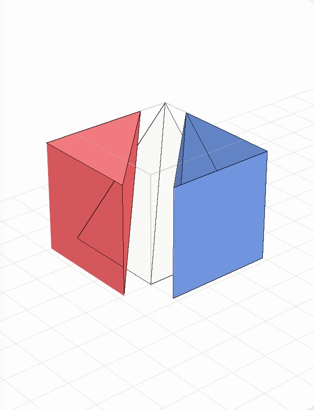
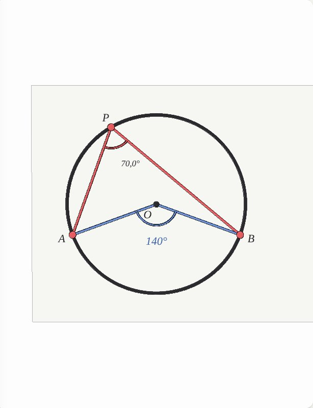
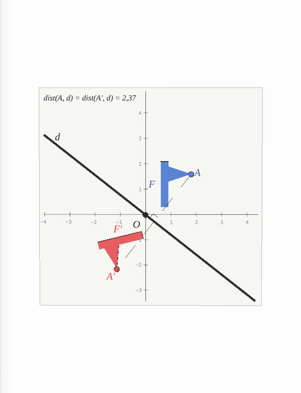
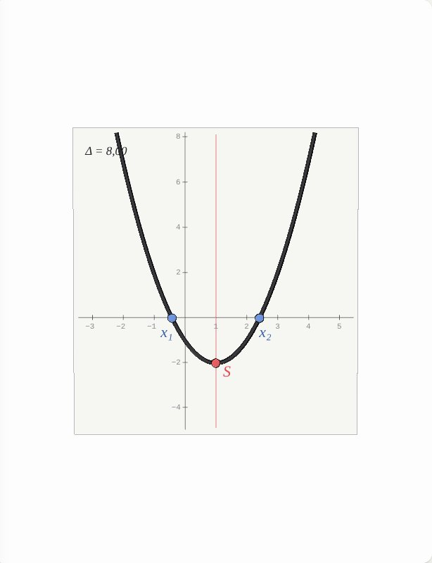
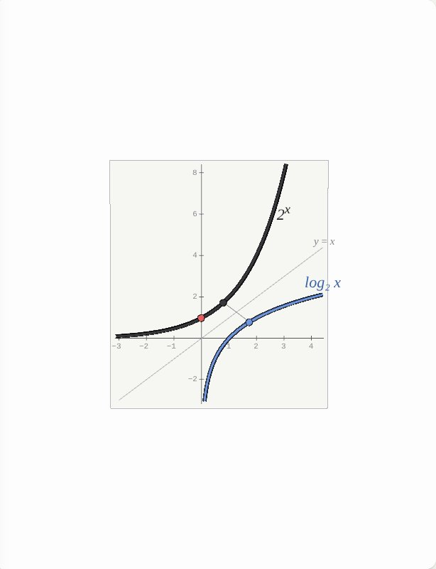
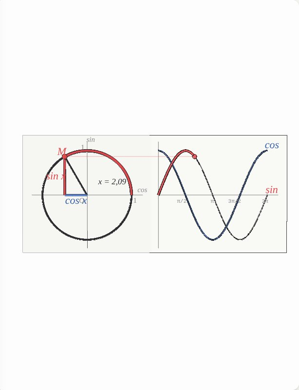
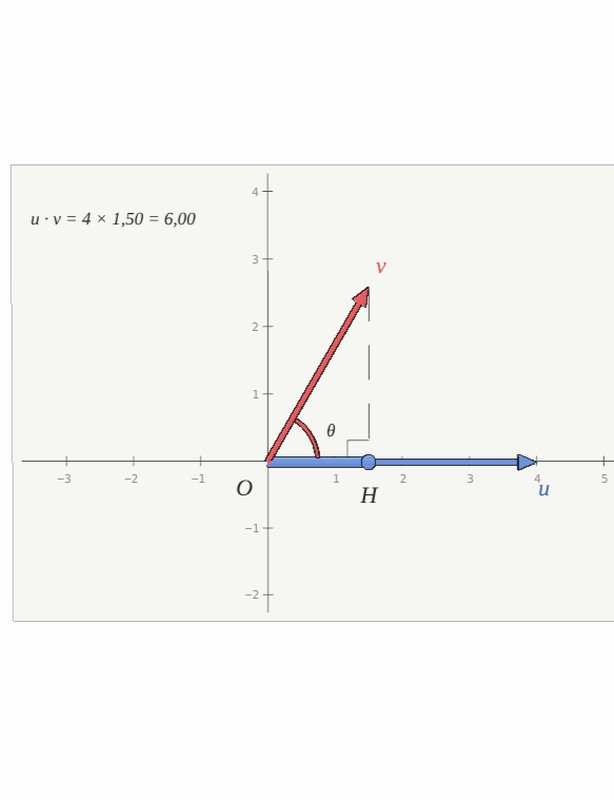
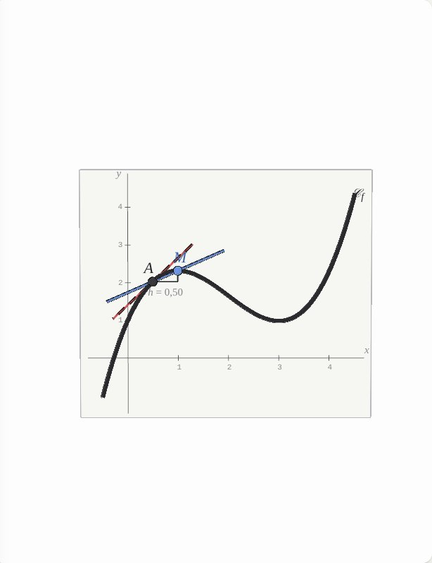
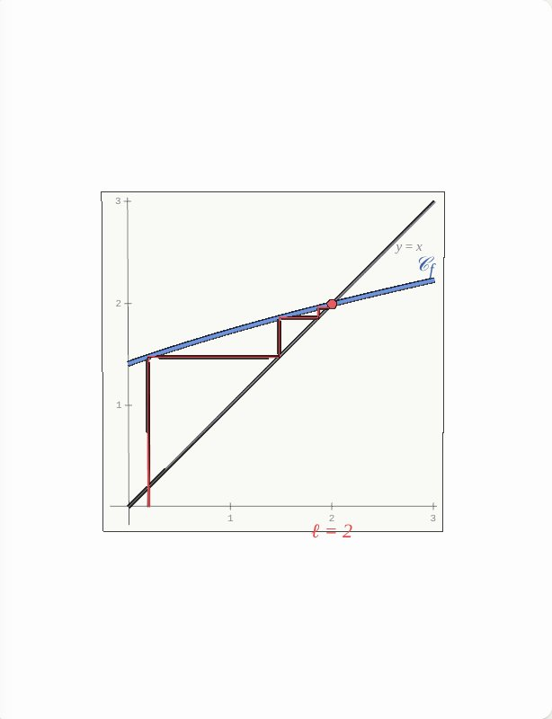
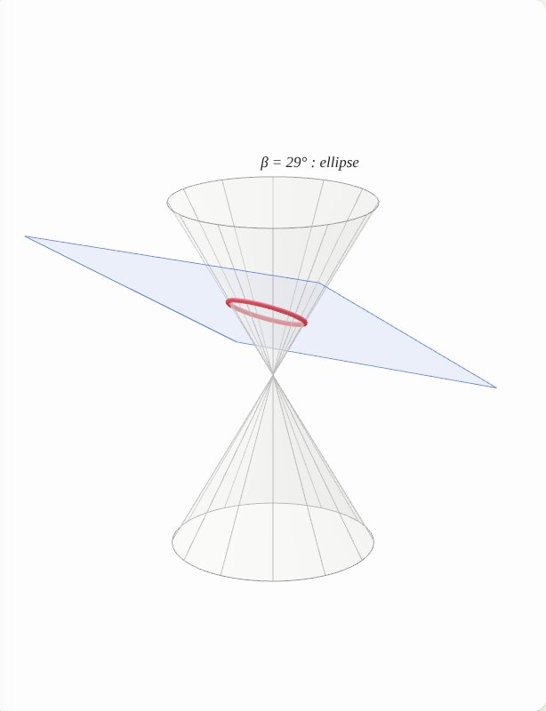
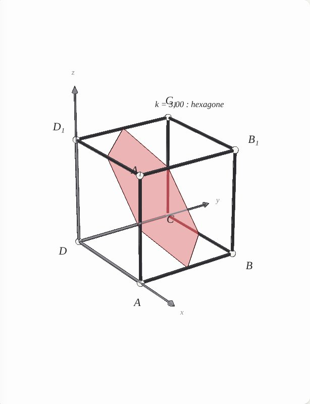
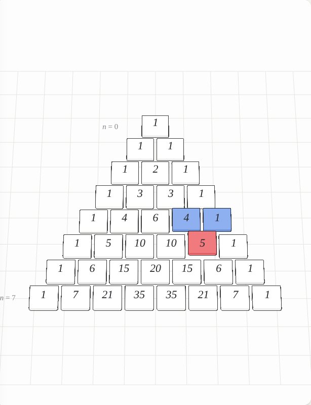
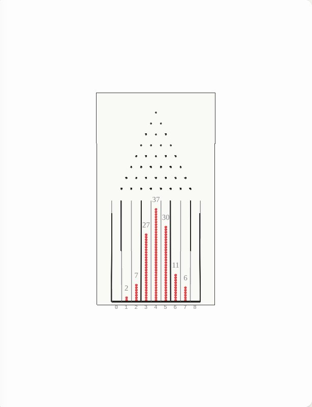
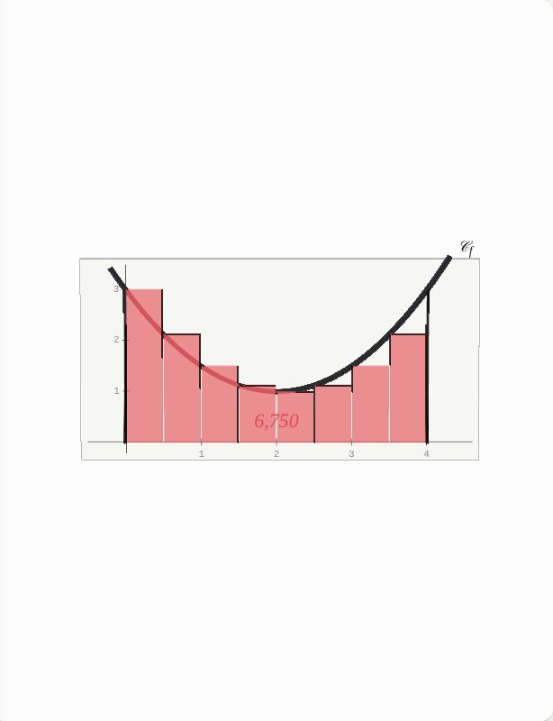
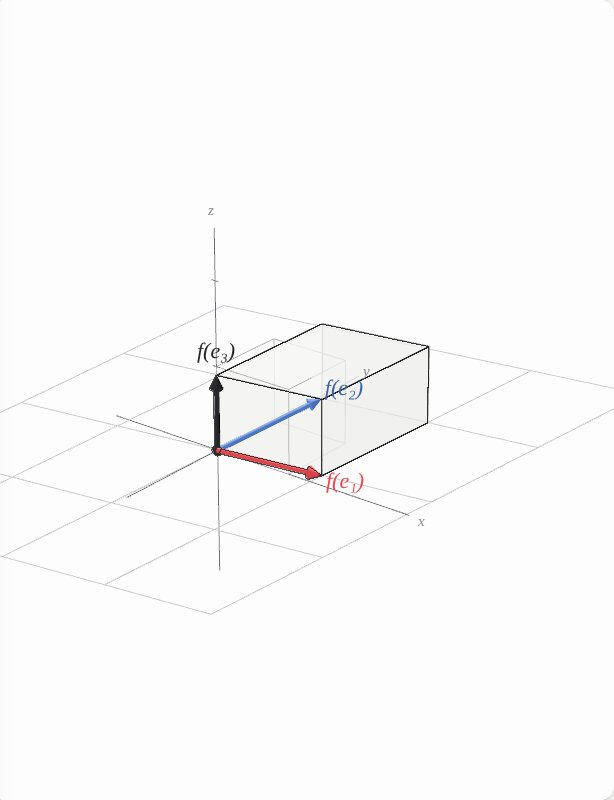
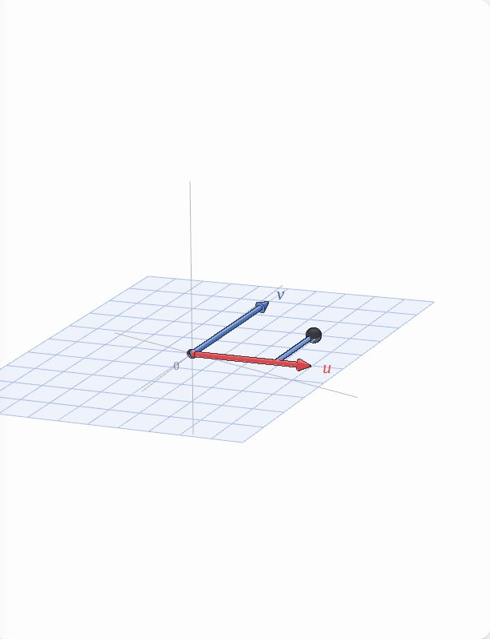
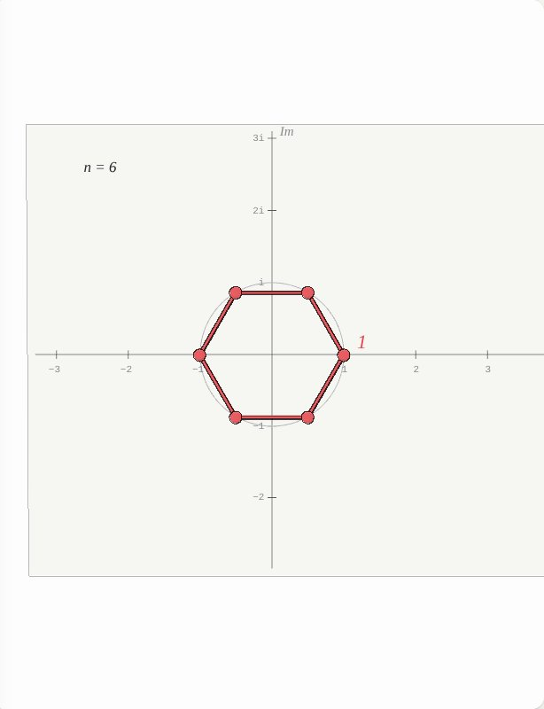
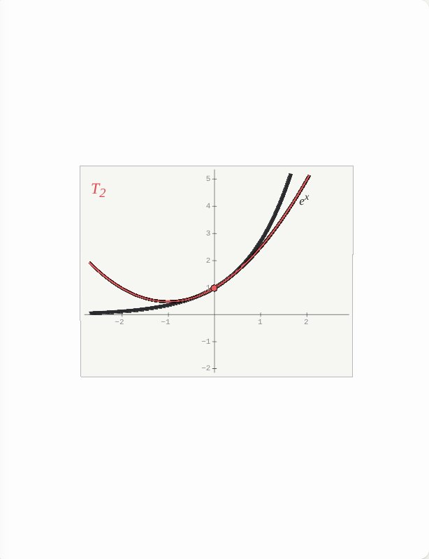
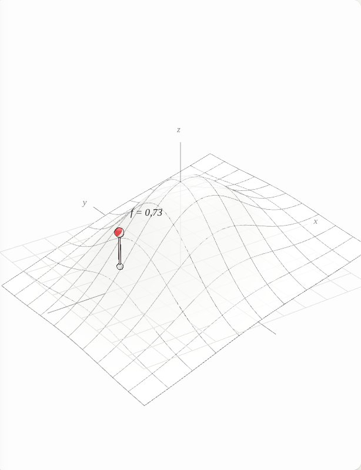
Moteur de rendu repris de Atlas of Physics (licence MIT).